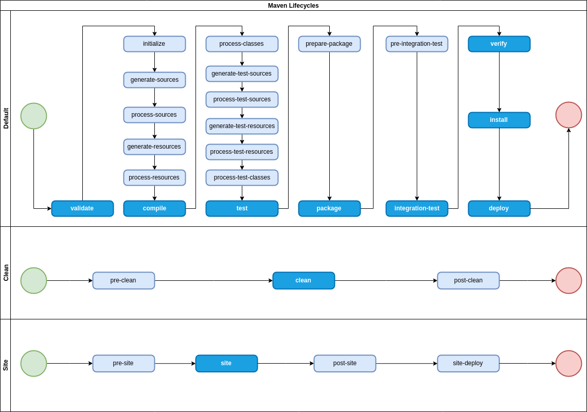
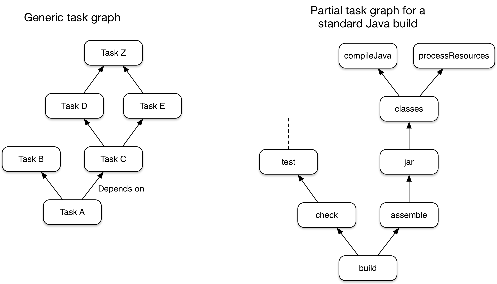
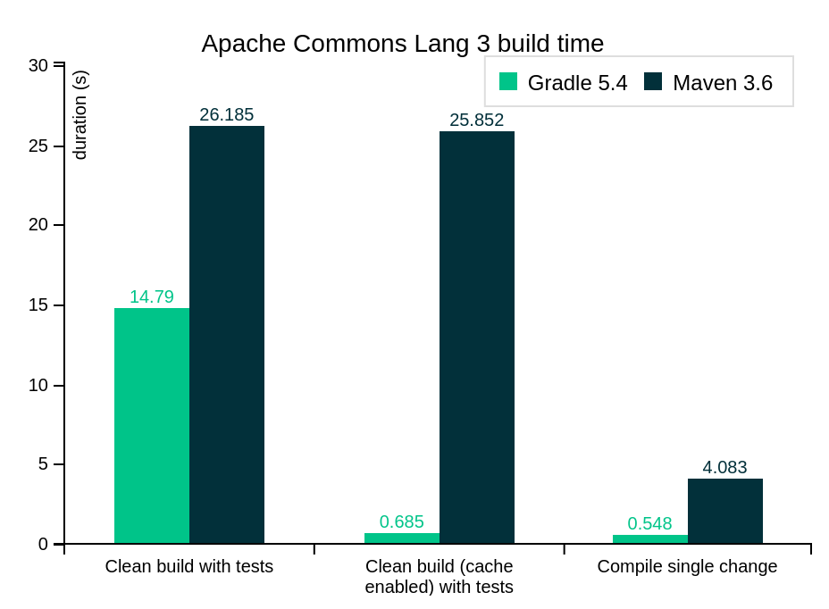
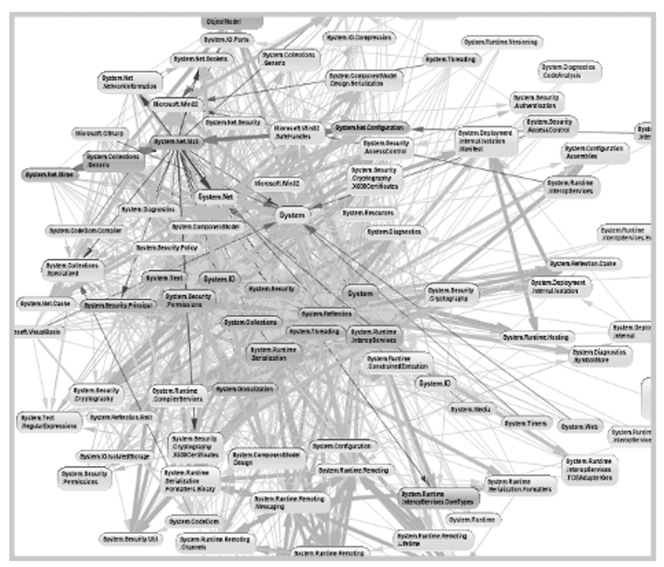
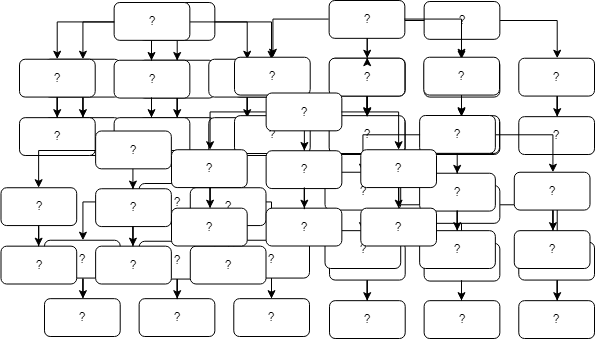
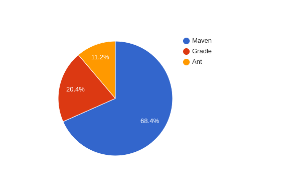
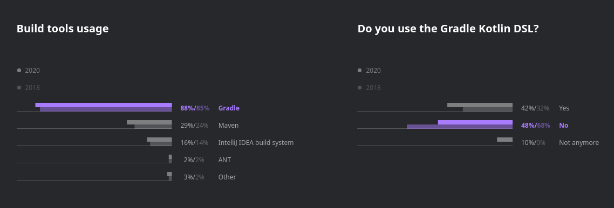

(Де)мистифицируем
Кто я такой?
- Фанат Linux 10 лет
- Ex-фанат Python
- Вкатился с Python на Kotlin
- Фанат Kotlin 3 года 🤷♂️
- Начал пользоваться Gradle раньше Maven
Что же такое Gradle?
- Тянет зависимости
- Вызывает компиляторы Kotlin и Java
- Генерит код из всяких xsd
- Пакует jar
- И прочие скучные задачи
Maven-style
Maven-style
Взгляд на сборку от Maven

DAG-и* от Gradle

*DAG - Directed Acyclic Graph
А вот что
- Производительность
- Инкрементальная сборка
- Инкрементальная компиляция
- Кеш результатов сборки
- Гибкость в настройке
- Эффективно параллелит выполнение задач
Производительность в сравнении с Maven (по версии Gradle.org)

Groovy DSL?
Groovy DSL?
Пример написания задачи в Gradle
Еще фишки Gradle
- Гибкость
- Адекватное управление зависимостями
- Легкость написания новых тасков
- Контроль над происходящим при сборке
- Gradle wrapper
Еще фишки Gradle
- Гибкость
- Адекватное управление зависимостями
- Легкость написания новых тасков
- Контроль над происходящим при сборке
Gradle wrapper
Работа с версиями
Простой кейс
Работа с версиями
Сложный кейс
Когда же использовать Gradle?
Нестандартная структура проекта

Много подпроектов и зависимостей (см пункт 1)

Есть микрозадачи, которые хочется автоматизировать

Всё еще самый популярный для JVM в целом

По данным опроса JRebel в 2021 г.:
https://www.jrebel.com/resources/java-developer-productivity-report-2021
Почему?
- Проверенный
- Общеизвестный
- Простой
- Охватывает потребности Enterprise
- Давно используется, страшно менять (легаси)
Но уступает позиции в Kotlin-разработке Gradle

По данным опроса Jetbrains в 2020 г.: https://www.jetbrains.com/lp/kotlin-census-2020/
Почему?
- Хочется один язык
- Сложно конфигурировать нестандартные проекты
- Тяжело расширять
- Gradle - стильно, модно, молодежно
- Тулинг Kotlin затачивается под Gradle

Полезные ссылки
- https://gradle.org/
- Гайд от команды Spring: https://spring.io/guides/gs/gradle/
- Stackoverflow, когда напишете свой таск, а он не будет работать